inthemix News
News for inthemix: tours, line-ups, festivals and the business of dance music in Australia. 1,167 pieces from the deep archive.
"We shouldn't be united:" Seth Troxler on EDM vs. the underground
27 October 2014Showtek on evolving from hardstyle: “At first, people would throw beer and boo”
30 October 2013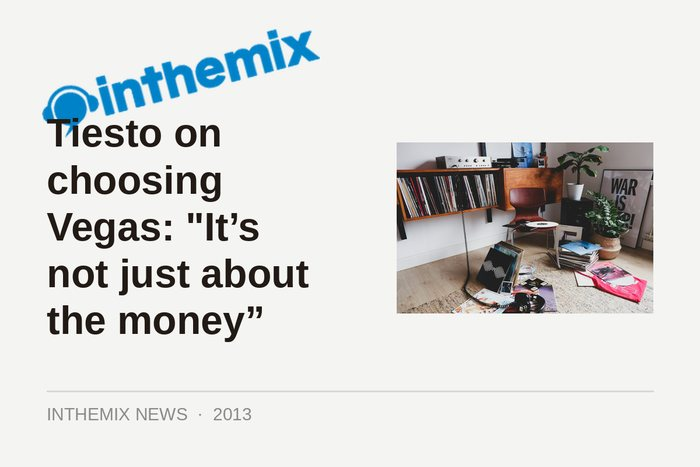
Tiesto on choosing Vegas: "It’s not just about the money”
14 August 2013Big names locked in for Amsterdam Dance Event 2013
1 August 2013Tomorrowland Day One: How the spectacle began
27 July 2013inthemix is going to Tomorrowland 2013
25 July 2013Jamie Jones lifts the lid on Hot Natured's debut album
22 July 2013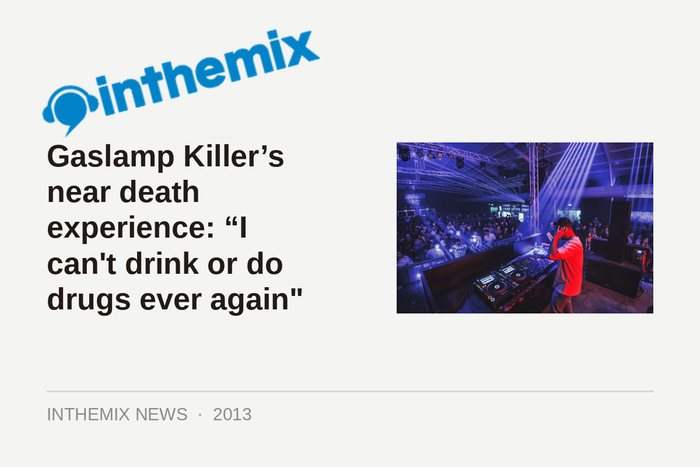
Gaslamp Killer’s near death experience: “I can't drink or do drugs ever again"
22 July 2013
Why Armin van Buuren's psyched about Stereosonic's epic line-up
17 July 2013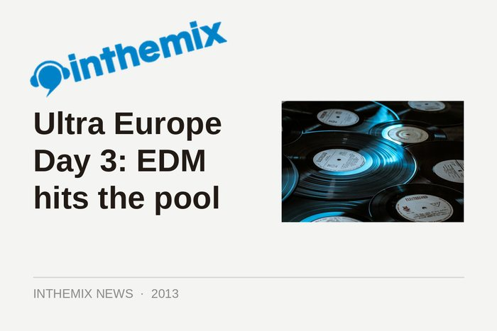
Ultra Europe Day 3: EDM hits the pool
15 July 2013Drum & bass, hardstyle, trance: Ultra Europe's all-in Night Two
14 July 2013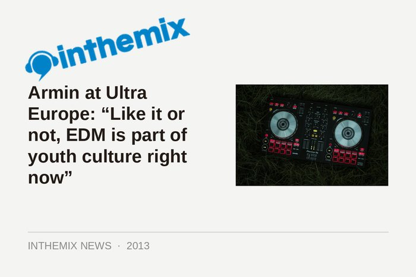
Armin at Ultra Europe: “Like it or not, EDM is part of youth culture right now”
14 July 2013Ultra Europe Night One: The sets that went large
13 July 2013Porter Robinson at Ultra Europe: "I'm gonna play an energetic set that people don’t know"
13 July 2013Watch: Ultra Europe's live stream schedule
12 July 2013Tiefschwarz reflects on U.S. tour: "It's still building all the time"
9 July 2013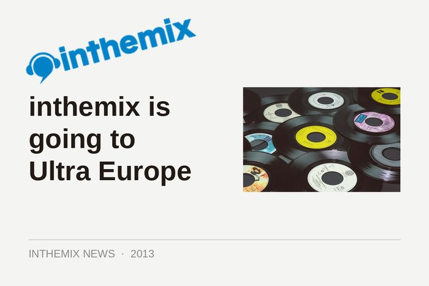
inthemix is going to Ultra Europe
9 July 2013Listen & Watch: Sensation ups the spectacle for Into The Wild
8 July 2013Guy Gerber drops free album ahead of U.S. tour
16 June 2013
Seth Troxler's advice on the DJ game: "Don't be a dick"
11 June 2013Laidback Luke addresses fans who "told me I'm going downhill"
7 June 2013Watch: Nicolas Jaar & more in New York mini-doco
5 June 2013Sven Vath weighs in on Ibiza's VIP culture: "Who is really important?"
5 June 2013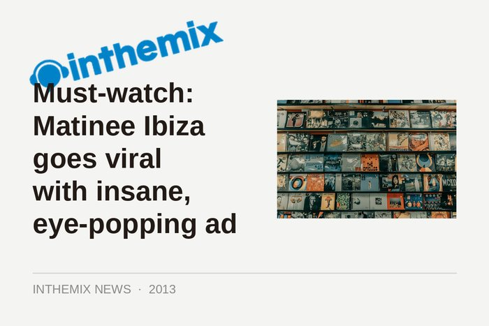
Must-watch: Matinee Ibiza goes viral with insane, eye-popping ad
2 June 2013
Watch: Richie Hawtin & Giorgio Moroder go deep at RBMA New York
29 May 2013
Above & Beyond stage a sly dig at will.i.am's rip-off
29 May 2013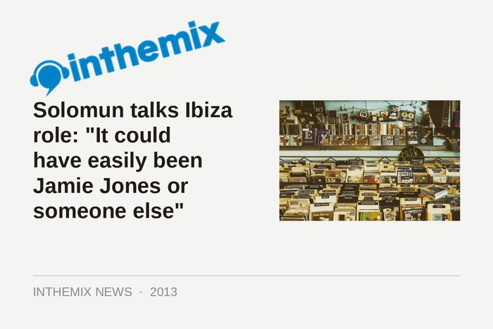
Solomun talks Ibiza role: "It could have easily been Jamie Jones or someone else"
28 May 2013Nile Rodgers on working with Avicii, Guetta, Disclosure: "I still love dance music"
27 May 2013
Fatboy Slim’s DJ secrets: "Always be 20 percent more wasted than your crowd"
24 May 2013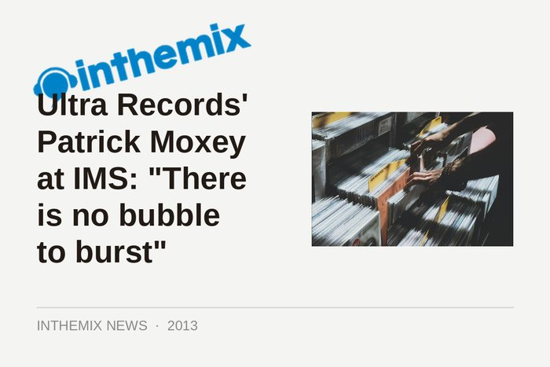
Ultra Records' Patrick Moxey at IMS: "There is no bubble to burst"
23 May 2013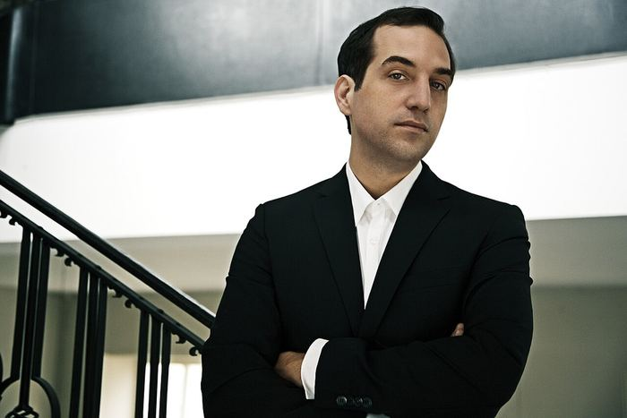
Marc Houle reveals new synth-pop live act
16 May 2013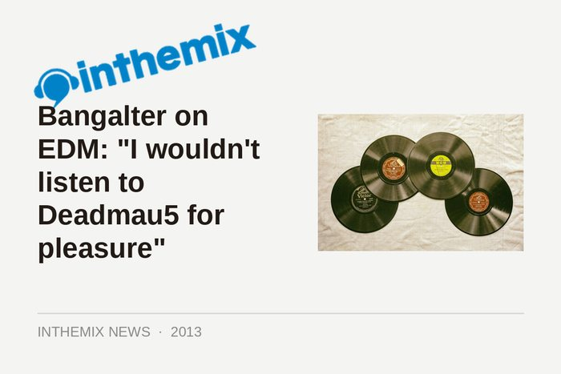
Bangalter on EDM: "I wouldn't listen to Deadmau5 for pleasure"
16 May 2013Tiesto preps new 'Club Life' mix-CD; isn't feeling 'Get Lucky'
15 May 2013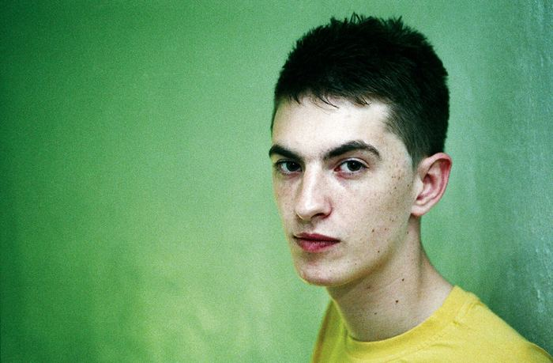
Skream on "awful" Boiler Room set: "I was clearly smashed"
15 May 2013Long sets and techno heavies: Cocoon Ibiza's 2013 line-ups
15 May 2013Loco Dice to Guetta: Ushuaia Ibiza reveals its 2013 stars
17 April 2013How Diynamic boss Solomun is owning 2013
9 April 2013Listen: Corsten and Schulz storm in with first New World Punx set
2 April 2013Tomorrowland crosses the ocean in September for 'TomorrowWorld'
19 February 2013Lange finally returns for 2012 Australian tour
17 September 2012Funk D’Void: "A bag of crisps lasts longer than half the stuff you hear these days"
17 September 2012Tiesto readies next College Invasion tour
13 September 2012ID&T speaks out on the Defqon.1 revolution
13 September 2012Tomorrowland drops massive aftermovie, announces 2013 dates
11 September 2012John Digweed preps new compilation and mammoth 7-hour set
11 September 2012Richie Hawtin and Luciano team up for historic Ibiza bash
10 September 2012Robert Hood discusses his Detroit departure
7 September 2012Above & Beyond #TATW450 locked in for India
5 September 2012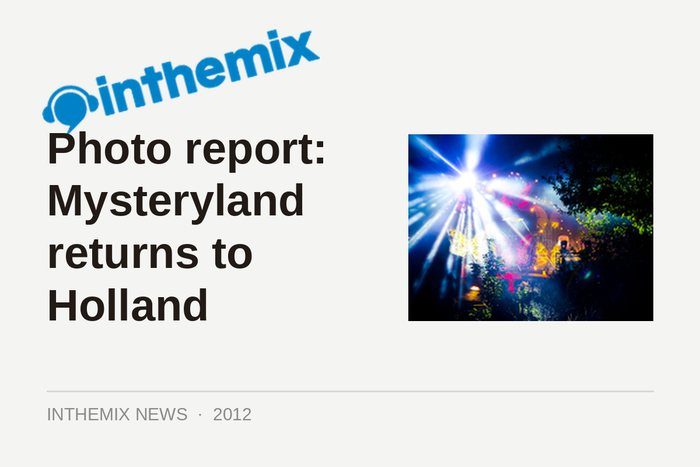
Photo report: Mysteryland returns to Holland
29 August 2012Jaytech talks new Anjunabeats album with ITM
7 August 2012Tomorrowland day #3: David Guetta, Chris Liebing, Richie Hawtin and more
31 July 2012Tomorrowland day #2: Swedish House Mafia, Cocoon Heroes, Paul van Dyk
30 July 2012Tomorrowland day #1: Avicii, Above & Beyond, Carl Cox & more
29 July 2012Tomorrowland fires up: pre-party site report
28 July 2012Muse on brostep: "Can rock bands compete?"
26 July 2012Caribou's Dan Snaith takes on the ‘EDM barfsplosion’ with new album
26 July 2012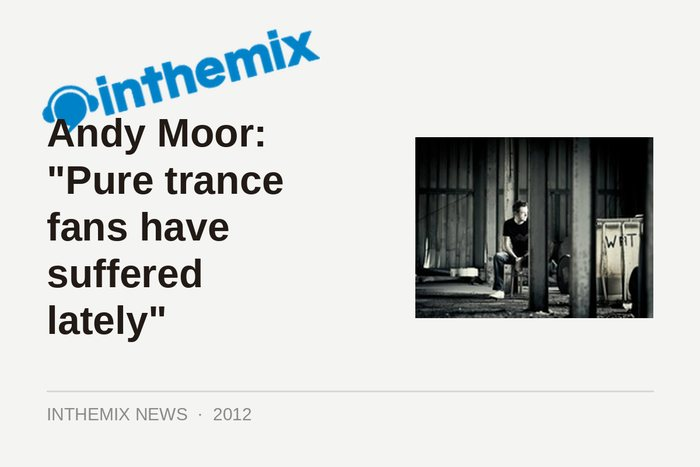
Andy Moor: "Pure trance fans have suffered lately"
26 July 2012Sounds on Sunday nods to the old school with opening party
25 July 2012Is Skream's 'Midnight Request Line' the greatest dubstep song ever?
25 July 2012Industry stalwart Samuel Guetta found dead in Ibiza home
25 July 2012Sónar Festival daily report #3: New Order, Maya Jane Coles, Modeselektor, Deadmau5
18 June 2012Sónar Festival daily report #2: Amon Tobin, Nicolas Jaar, Hawtin, Fatboy Slim & more
17 June 2012Sónar Festival daily report #1: Sónar by Day, Richie Hawtin, Steve Bug
15 June 2012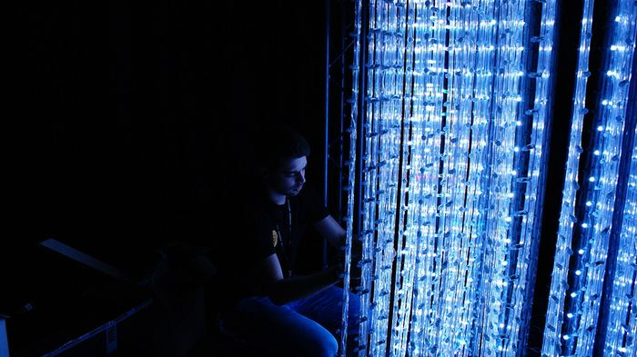
inthemix is going to Barcelona for Sónar Festival 2012
14 June 2012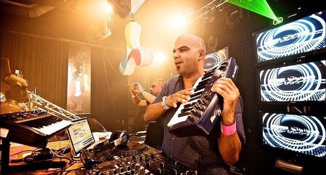
Roger Shah brings his magic keytar back for September 2012 tour
12 June 2012Sónar Festival will stream live from Barcelona
8 June 2012Jody Wisternoff rises from his Way Out West legacy
8 June 2012Amon Tobin celebrates 15 years with 'bolt-fastened' box set
7 June 2012
Eric Prydz tells ITM: "I will come to Australia - I have to"
24 May 2012Above & Beyond talk shop on Australian tour & ’trance 2.0’
13 September 2011Joris Voorn talks up his 'Balance' triumph
27 April 2010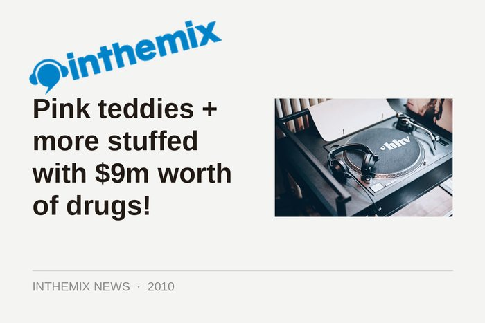
Pink teddies + more stuffed with $9m worth of drugs!
13 February 2010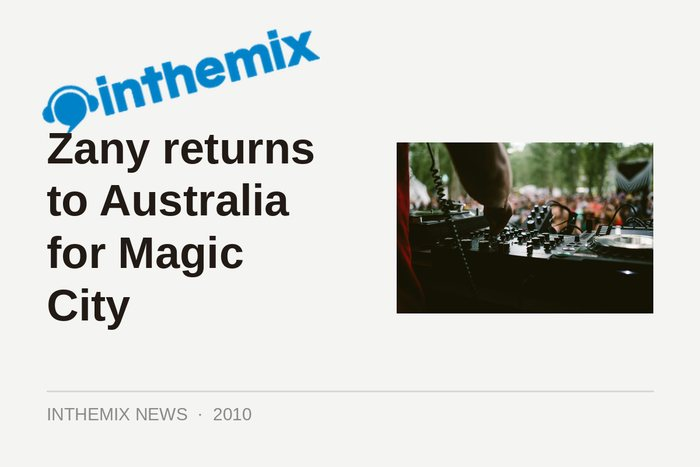
Zany returns to Australia for Magic City
12 February 2010
Hernan Cattaneo returns in April
9 February 2010Creamfields lineup explodes onto ITM 9am Wednesday!
9 February 2010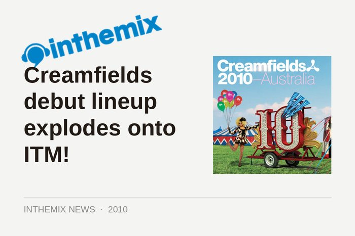
Creamfields debut lineup explodes onto ITM!
9 February 2010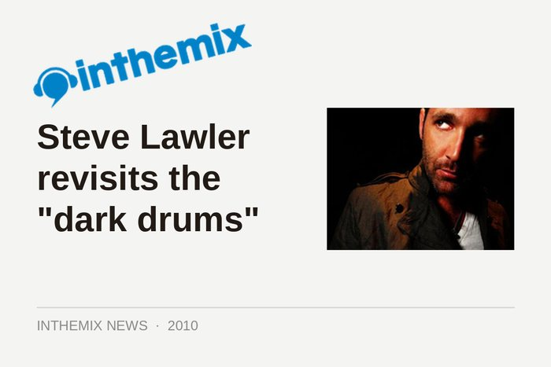
Steve Lawler revisits the "dark drums"
8 February 2010Australia's first Tiesto 'Kaleidoscope' photos!
3 February 2010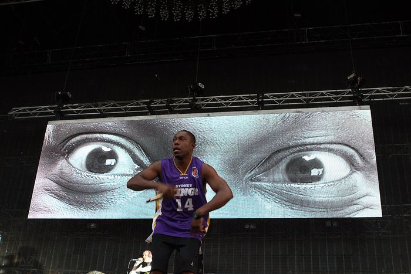
Sven Vath preparing to party hard at Future Music Festival
2 February 2010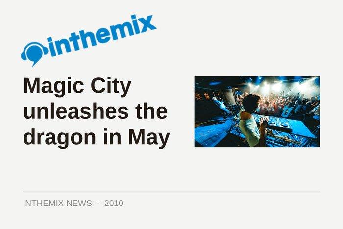
Magic City unleashes the dragon in May
2 February 2010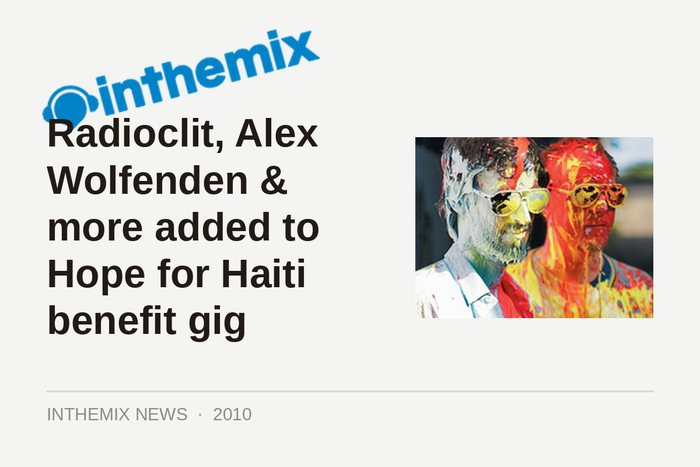
Radioclit, Alex Wolfenden & more added to Hope for Haiti benefit gig
1 February 2010
James Zabiela bringing Renaissance to Australia in May
1 February 2010inthemix's most wanted tours of 2010!
29 January 2010
Creamfields coming to Australia in May
28 January 2010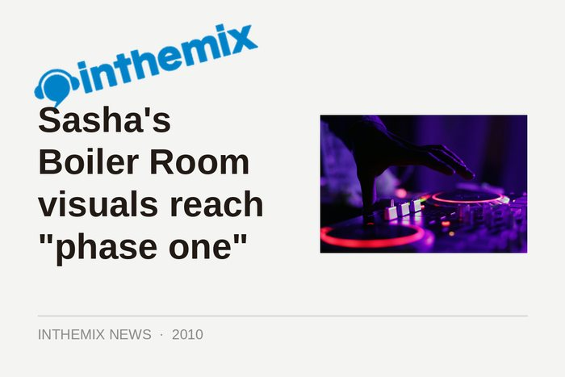
Sasha's Boiler Room visuals reach "phase one"
27 January 2010Dizzee Rascal gets mighty pissed with news.com.au journo
27 January 2010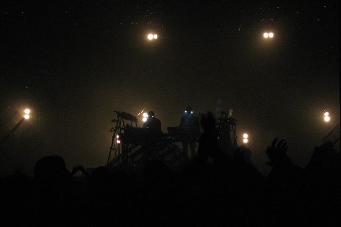
Orbital national tour dates announced
25 January 2010Drugs & wellbeing - do you know everything that you need to?
25 January 2010
Big Day Out lands in Sydney, check out the photos
25 January 2010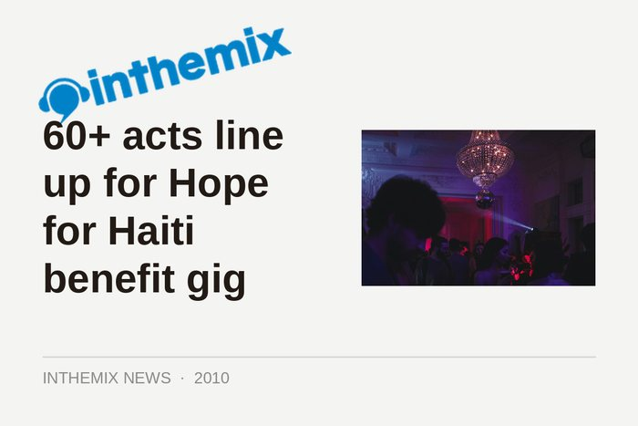
60+ acts line up for Hope for Haiti benefit gig
25 January 2010Spice moves to the Home Terrace
22 January 2010Pendulum previewing new album
22 January 2010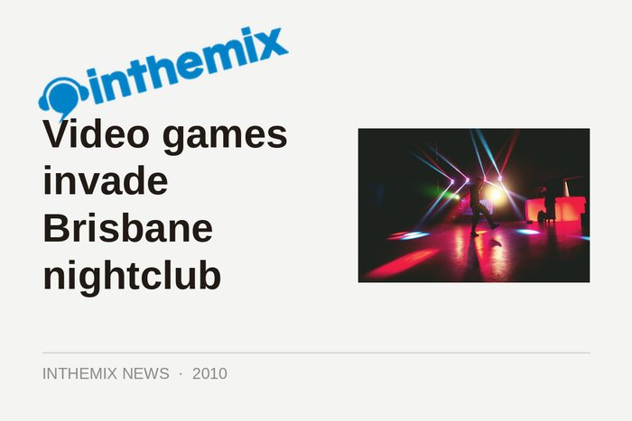
Video games invade Brisbane nightclub
20 January 2010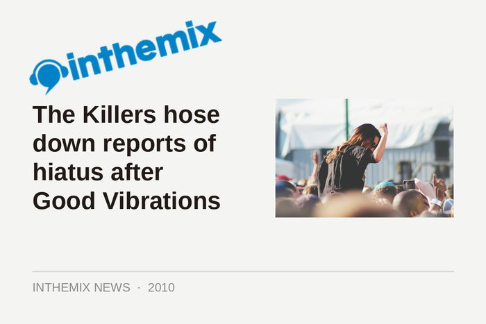
The Killers hose down reports of hiatus after Good Vibrations
19 January 2010
Future Music Festival sells out Sydney + sideshows galore
18 January 2010Future Music Festival adds Way Out West, Spank Rock & more to lineup
18 January 2010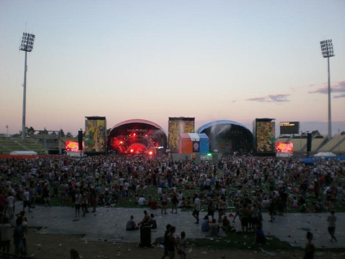
Big Day Out launches for 2010, check out the photos!
18 January 2010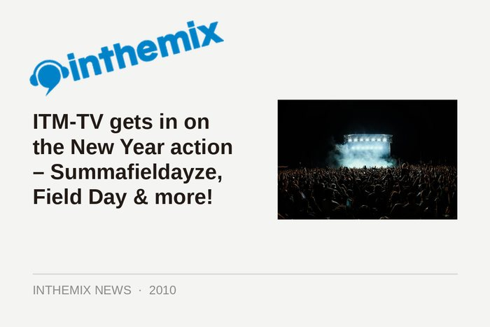
ITM-TV gets in on the New Year action – Summafieldayze, Field Day & more!
15 January 2010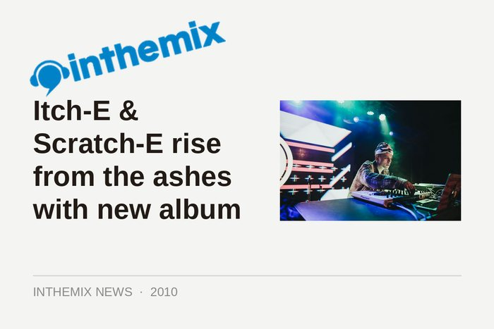
Itch-E & Scratch-E rise from the ashes with new album
15 January 2010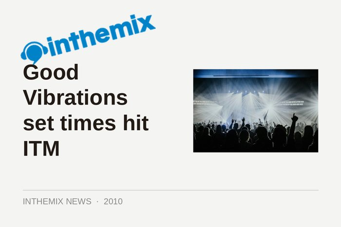
Good Vibrations set times hit ITM
15 January 2010The Age blames late-night violence on... house music!
8 January 2010
Groove Armada talk Big Day Out - "it’s a lifetime ambition"
8 January 2010
Summadayze, Field Day, Space Ibiza NYD - ITM's 'best of' NYD galleries!
7 January 2010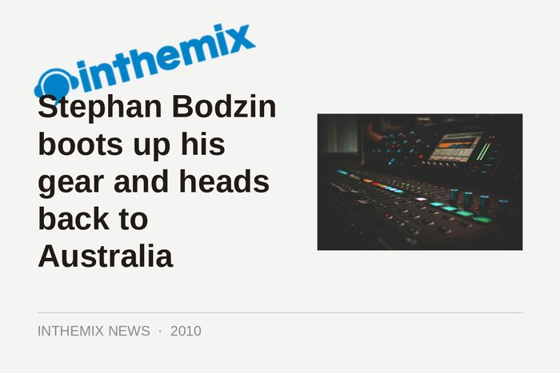
Stephan Bodzin boots up his gear and heads back to Australia
7 January 2010
Limited round of tickets available to Big Day Out
7 January 2010Sensation, Shore Thing, Summanights - ITM's 'best of' NYE galleries!
6 January 2010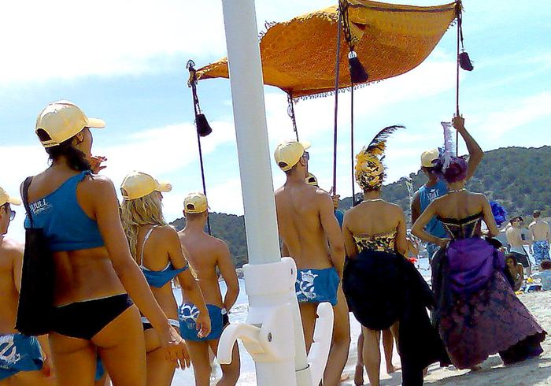
Space Ibiza NYD's free ticket furor
5 January 2010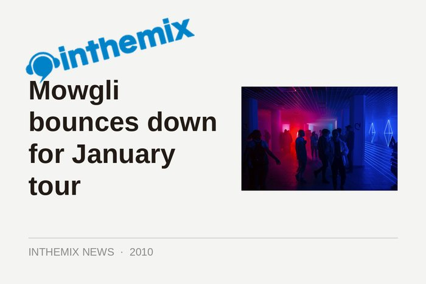
Mowgli bounces down for January tour
5 January 2010Lawler & Lavelle set to invade your clubs in February
5 January 2010
Danny Tenaglia locked for epic 6-hour set this Thursday!
5 January 2010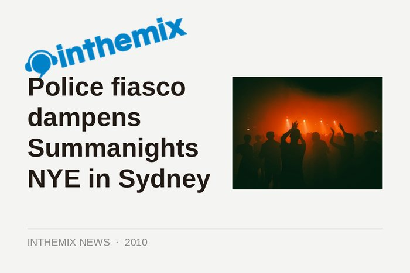
Police fiasco dampens Summanights NYE in Sydney
4 January 2010ITM's New Year photo coverage
3 January 2010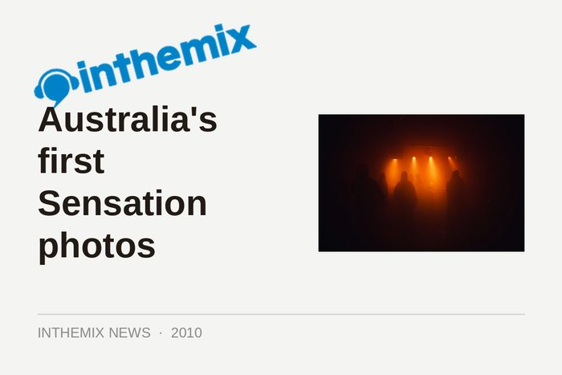
Australia's first Sensation photos
3 January 2010Pacha NYE set times announced
30 December 2009
Muscles plots his big return for 2010
30 December 2009
Ben Watt & Dixon touring for Australia Day
30 December 2009Summadayze set times land on ITM
29 December 2009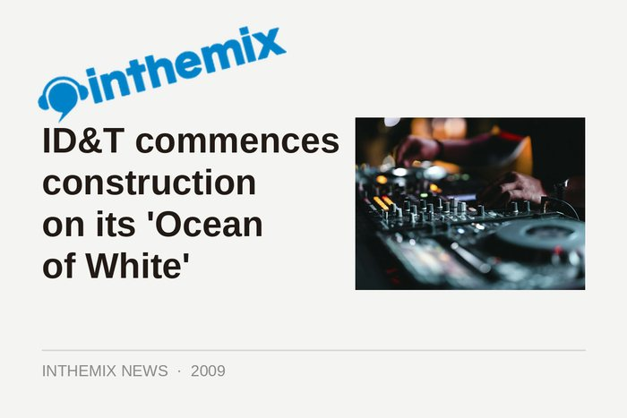
ID&T commences construction on its 'Ocean of White'
29 December 2009Gui Boratto's February tour
29 December 2009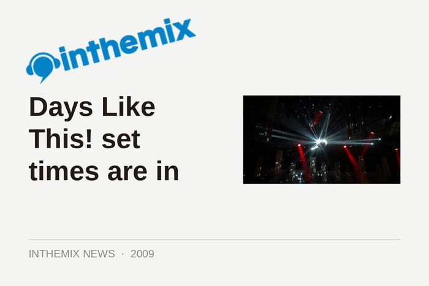
Days Like This! set times are in
29 December 2009